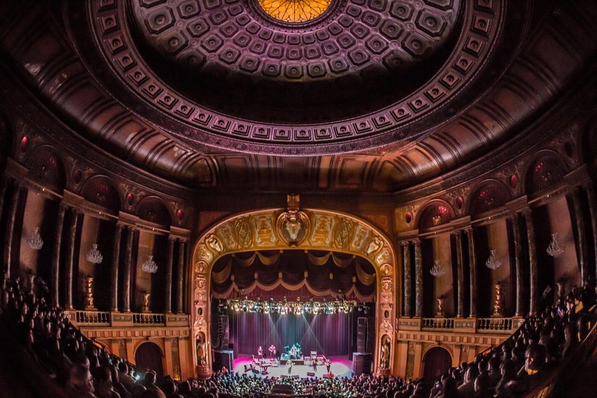
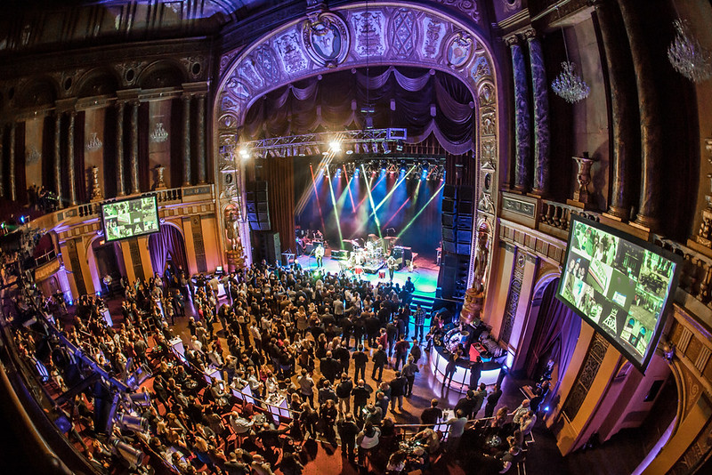
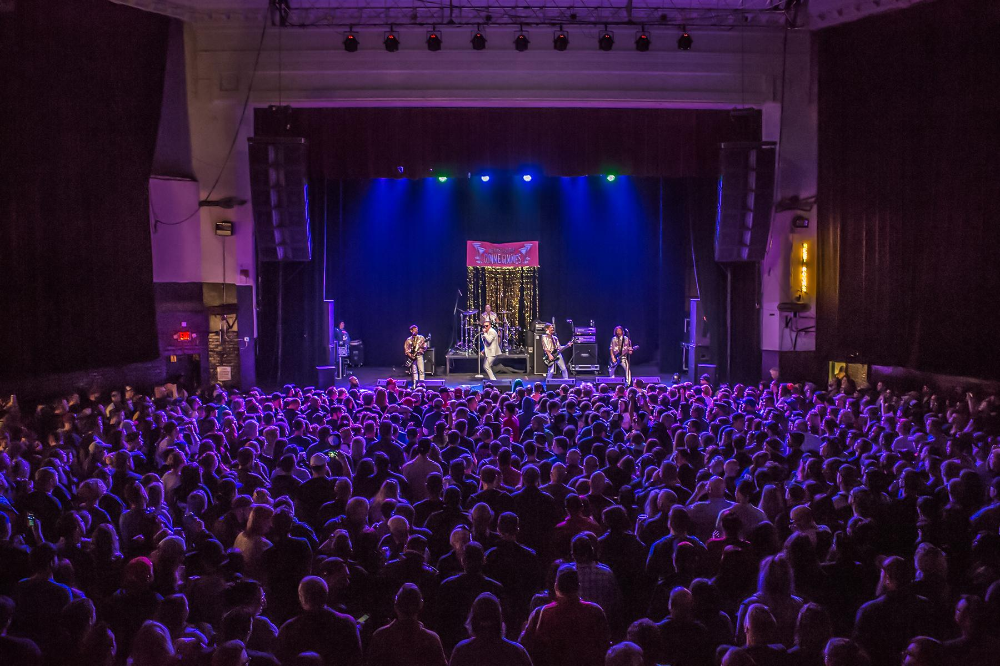
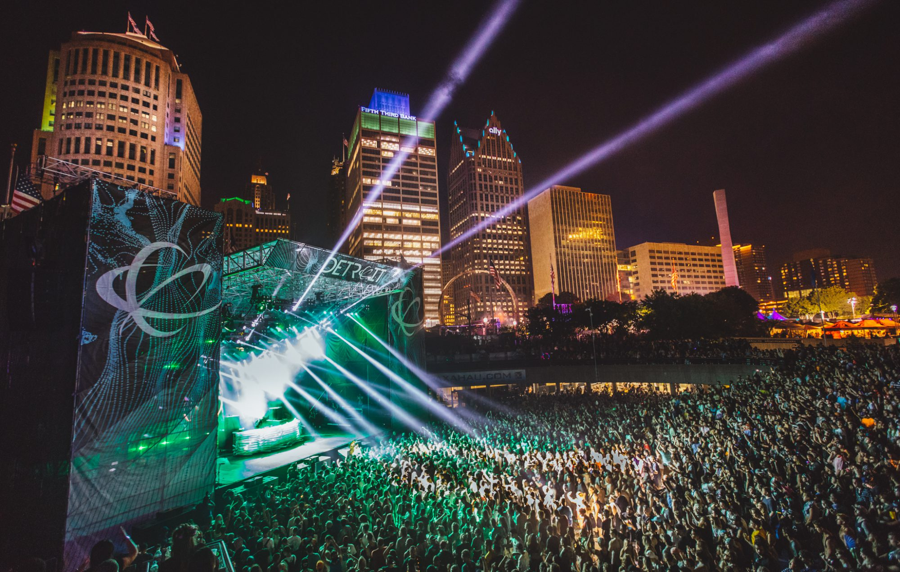
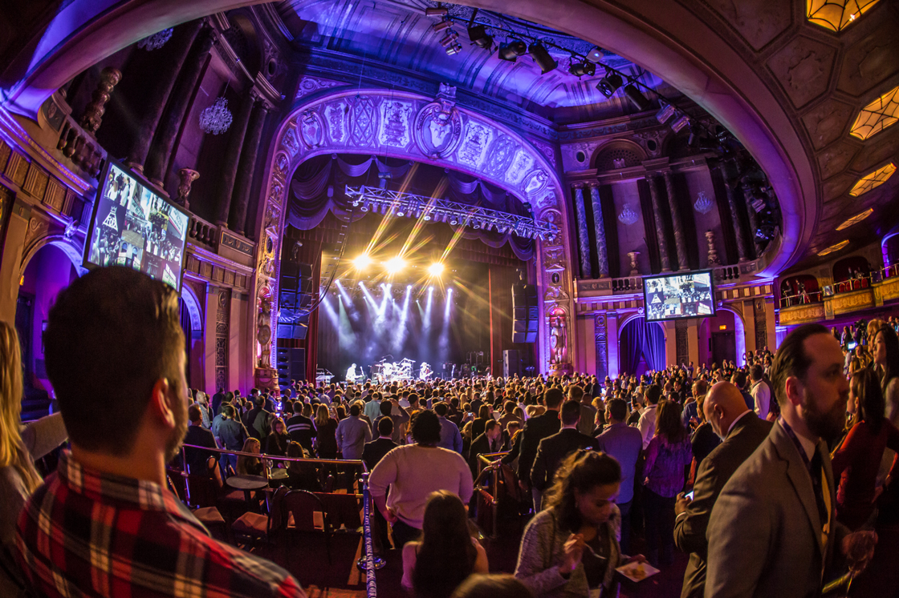
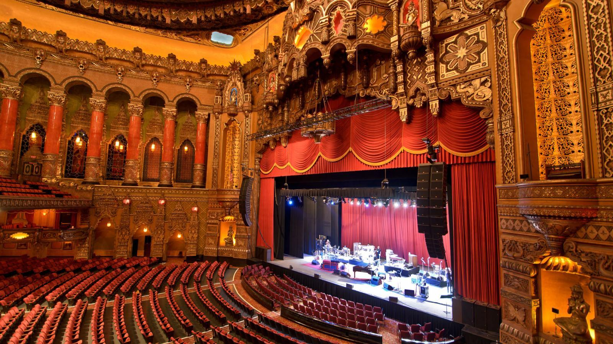
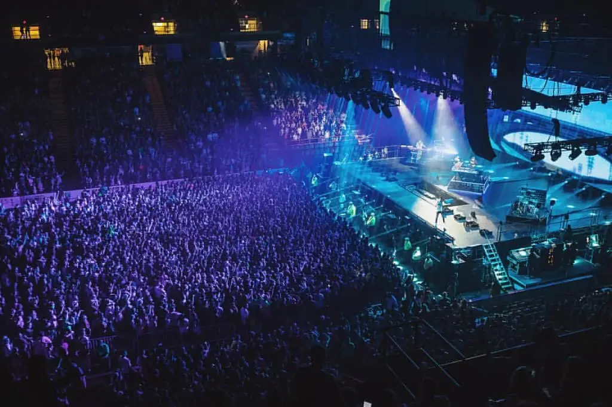

Motown Era
Motown Records, founded in 1959 by Berry Gordy, revolutionized the music industry with hits by The Supremes, Stevie Wonder, and Marvin Gaye.
The Birth of Techno
Detroit is known as the birthplace of techno music, pioneered by artists like Juan Atkins, Derrick May, and Kevin Saunderson in the 1980s.
Historic Music Venues






Detroit's historic venues have hosted legendary performances, creating memories for countless fans across generations.